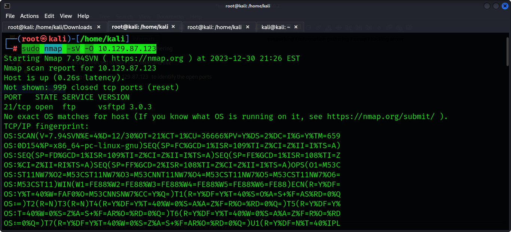
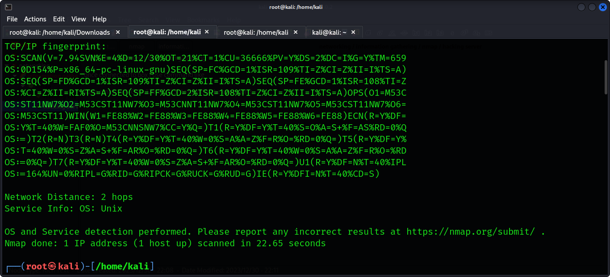
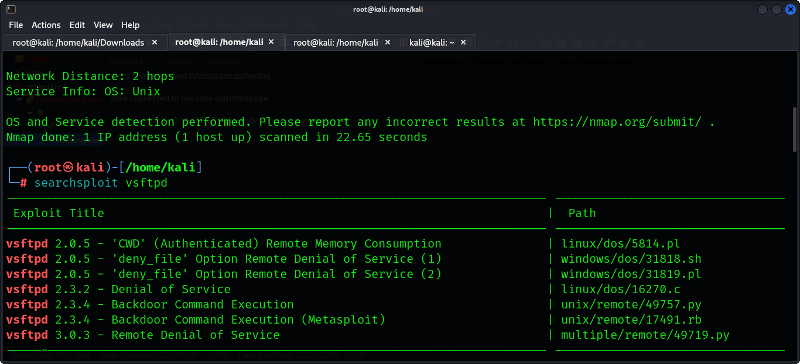
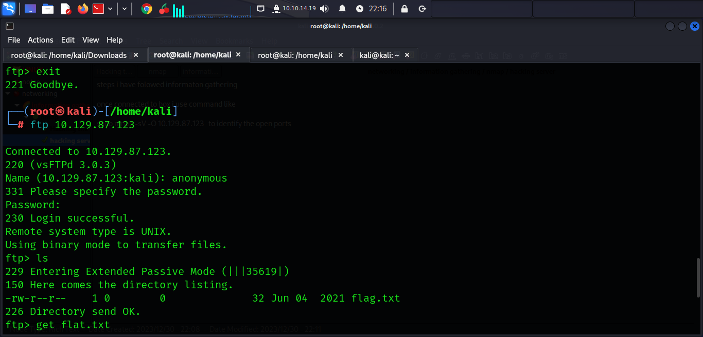
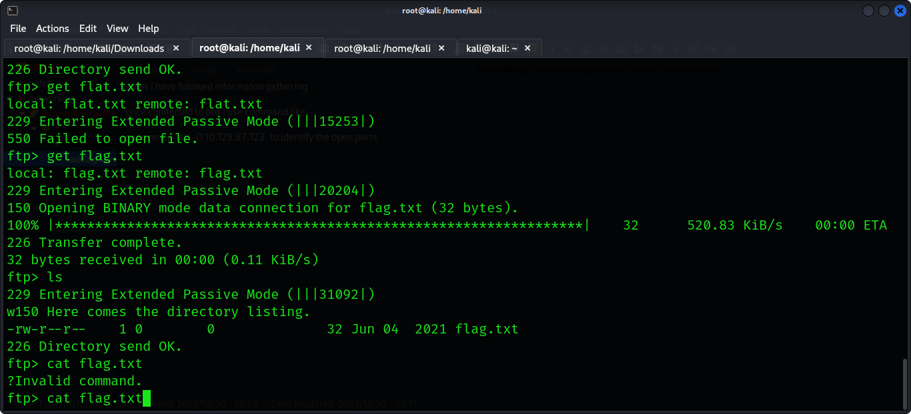

steps i have folowed informaton gathering
once connected to box i use command like
sudo nmap -sV -O 10.129.87.123 to identify the open ports
hh
jjjj
then you can search the version in searchploit
searchsploit vsftpd
j
then you can connect to the server and because it i ftp you can login as anonymous as user and password as anonymous then while in server you can download files using get command
l
